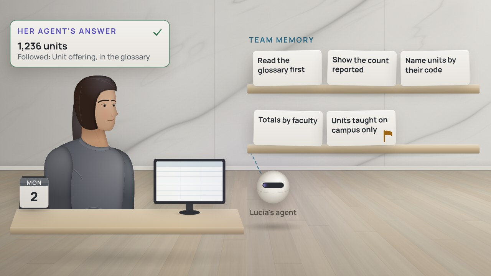

Película 1 de 9 · Lo que lee un agente
Ingeniería de contexto
El agente de Jun adivina qué significa una palabra y cuenta 6,931. Escrito una vez por su dueña, el significado da 6,212.
Temas › Agentes de IA en el trabajo con datos › Agentes trabajando con datos
La segunda serie sobre agentes de IA en el trabajo con datos. El agente de Jun ya trabaja en el conteo del día del censo, la cifra que la universidad informa al gobierno. Seis películas muestran cómo trabajan bien los agentes, de lo que leen a cómo fallan; tres lo muestran en Databricks, gobernado.
Míralas en orden: cada película se apoya en la anterior.
Película 1 de 9 · Lo que lee un agente
El agente de Jun adivina qué significa una palabra y cuenta 6,931. Escrito una vez por su dueña, el significado da 6,212.
Película 2 de 9 · Guías para agentes
Lo hecho una vez a mano se vuelve una skill que todo agente reutiliza; un flujo nocturno llama al agente si las cifras difieren.
Película 3 de 9 · Herramientas y permisos
El agente de Jun tiene seis herramientas, sus manos. Cada una tiene solo lo necesario: una línea escondida no saca la lista.
Película 4 de 9 · Memoria para el equipo
Lo que aprendió el agente de Jun en un chat no llegó al de Clara. La memoria del equipo, aprobada por una persona, llega a todos.
Película 5 de 9 · El ciclo de trabajo
Nadie sabe el conteo aún: Jun decide antes qué debe cumplir la respuesta. Cuando faltan 28 estudiantes, una prueba lo detecta.
Película 6 de 9 · Diseñar para las fallas
El agente de Jun trabaja en el conteo del censo. Seis formas en que puede fallar, sin culpa de nadie, y el diseño para cada una.
Película 7 de 9 · Agentes en la plataforma
Tres agentes con sus propias copias dan tres respuestas. En Databricks, con los mismos datos y herramientas, los tres dicen 168.
Película 8 de 9 · Agentes con las mismas reglas
El agente de Anil leía con su clave. Ahora tiene un nombre propio, solo los permisos que necesita y un modelo permitido.

Película 9 de 9 · Primero, lo gobernado
Una línea de la memoria perdió tres palabras, y el agente de Lucía dejó fuera 94 unidades. Ahora gana la definición del glosario.
El agente de Jun trabaja en el conteo del día del censo, la cifra que la universidad informa al gobierno. Película a película, el equipo le da qué leer, habilidades que seguir, manos con los mínimos permisos y una memoria que comparte todo el equipo; decide cómo se comprobará cada resultado antes de que empiece; se prepara para las formas en que falla; y luego lo lleva todo a Databricks, gobernado como cualquier dato, antes de que la siguiente serie le dé al agente un rol propio.
| Película | Empieza con | Sigue siendo cierto |
|---|---|---|
| Ingeniería de contexto | Arezzo, Italia, hacia 1025: líneas en la página | Lo que vivía en la cabeza de cada maestro pasó a la página, y los niños cantaron cantos que nunca habían oído. |
| Skills y flujos de trabajo | Bagdad, hacia el año 820: el libro de al-Juarismi sobre completar y equilibrar | Resuélvelo una vez, escríbelo, reutilízalo. |
| Las herramientas son manos, y cada mano es un permiso | Oxford, 1602: una biblioteca refundada con una sola regla | Lee aquí, no te lleves ningún libro, no marques ninguno, no traigas fuego, y cada libro encadenado a su estante. Dale a cada mano de un agente solo lo que su trabajo necesita. |
| Memoria: de un chat al equipo | Virginia y California, 1974 a 1976: un accidente, y un sistema de reportes para cada tripulación | Una lección que guarda una tripulación no salva a la siguiente. Contada en confianza, leída por una persona y compartida sin nombres, llega a todas. |
| Planificar, definir la verificación, hacer, verificar | Singapur, de 1998 a 2002: agua en la que se puede confiar | Sus 190 parámetros se escribieron antes de que la planta de prueba hiciera agua, unos expertos la midieron con ellos durante dos años, y luego 60,000 personas levantaron una botella y bebieron. |
| Cómo sale mal | Lisboa, 1755: un terremoto, una ola y el fuego, y una ciudad reconstruida para cada uno | La ciudad baja se reconstruyó para cada forma en que había fallado. Prevé las formas en que falla un agente, y diseña para cada una. |
| Trabajar con agentes en Databricks | La Facultad de Salud, hoy | Cuando cada agente lee los mismos datos gobernados con las mismas herramientas, una pregunta tiene una sola respuesta, con su evidencia. |
| Por qué Unity Catalog y Unity Gateway los gobiernan | Hoy, en la universidad: ¿de quién eran esas lecturas? | Unas mismas reglas para personas y agentes, aplicadas donde viven los datos y los modelos. |
| Contexto y memoria, gobernados | Hoy, en la universidad: una línea que perdió tres palabras | La memoria ayuda, pero lo gobernado decide, así que una línea errónea no puede cambiar una respuesta. |
Los contornos cian son del lado técnico; los dorados, del lado de negocio.
Jun Park, cuyo agente trabaja en el conteo del día del censo, y que revisa todo lo que el agente redacta
Mei Tanaka, de la oficina de registro, cuyas definiciones leen tanto las personas como los agentes
Noor Rahman, la arquitecta de datos, que aprueba cada cambio en producción, también los de un agente
Sam Okafor, que da a cada agente una identidad propia, y solo los permisos que su trabajo necesita
Clara Jensen, de Planificación, cuyas preguntas responden los agentes, con su evidencia